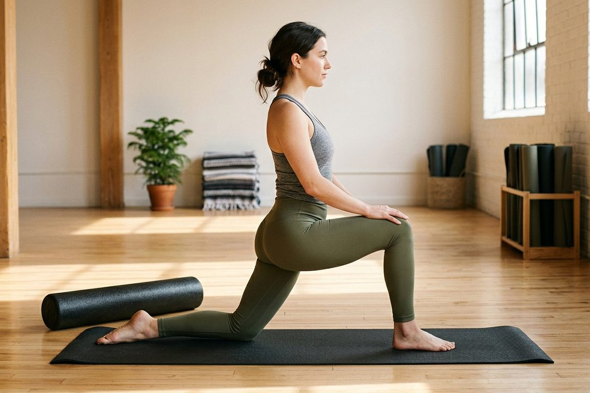

A 10-Minute Mobility Routine You'll Actually Do
Mobility work fails for one reason: people design a forty-minute routine they will do twice. Ten minutes, every day, covering the four areas that modern life stiffens most — ankles, hips, thoracic spine and shoulders — changes more in a month than two heroic stretch sessions ever will.
